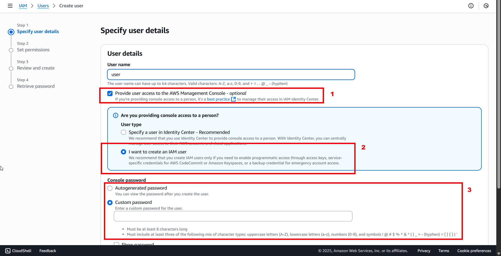
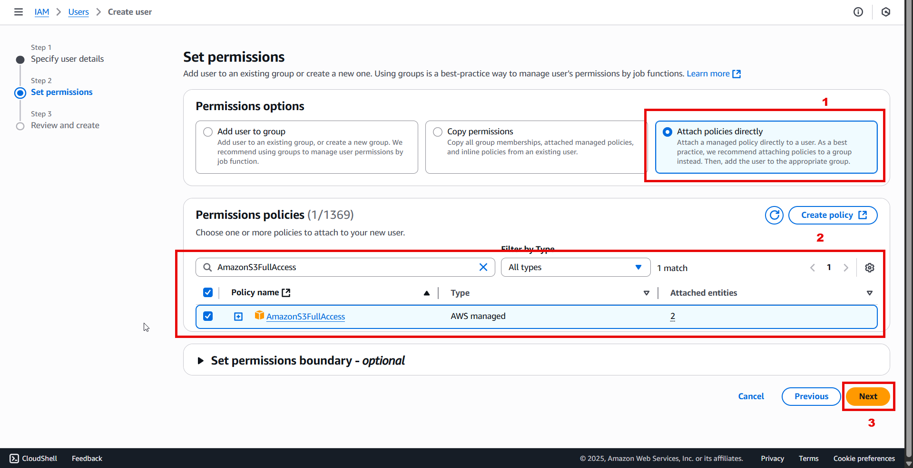
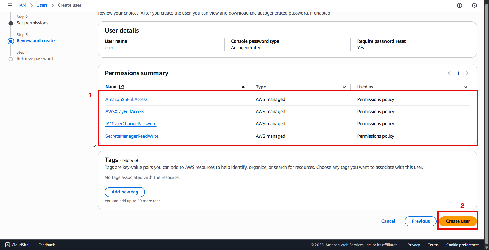
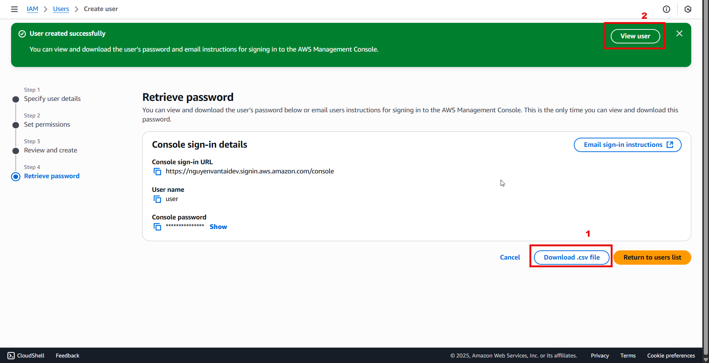
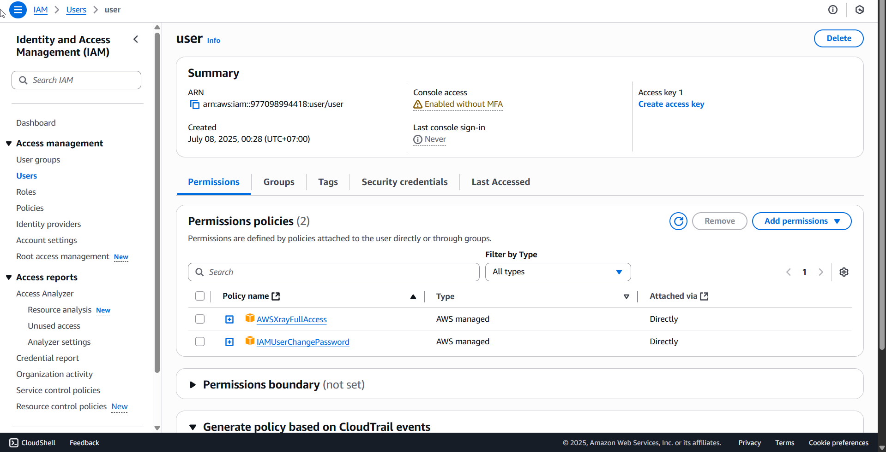

This step guides you through creating an IAM user with programmatic access. This user will be used to develop and test the application locally using AWS CLI or SDKs.
Click Provide user access to the AWS Management Console and I want to create an IAM user.
You can select Autogenerated password or Custom password
AWS Identity and Access Management (IAM)
Click Attach policies directly
Search for:
AmazonS3FullAccess
SecretsManagerReadWrite
AWSXRayFullAccess
AWSXRayDaemonWriteAccess
SecretsManagerReadWrite
AdministratorAccess-AWSElasticBeanstalk
And attach those policies to your user account and click Next.

AWS Identity and Access Management (IAM)
Review your user account to make sure all policies is attach then click Create user.

AWS Identity and Access Management (IAM)
Click Download the .csv file (because it contains the access key ID and secret access key).
Click View user to see your account.

AWS Identity and Access Management (IAM)
If you successfully created the user, you should see an interface like this:

AWS Identity and Access Management (IAM)
üîê Attach IAM Policy to User
After creating your IAM user, you need to attach the appropriate permissions to allow the user to work with Elastic Beanstalk and related AWS services.